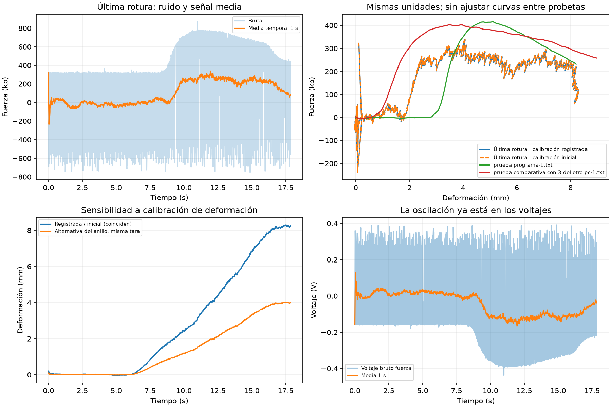

Los dos últimos ensayos de la tarde y su comparación de calibraciones están en el informe actualizado.
Registro analizado: ensayo_20261015_102212. Se compara con prueba programa-1.txt, según la correspondencia indicada. Los originales y el historial no se han modificado.
| Datos | Pico de fuerza | Deformación en el pico |
|---|---|---|
| Última rotura, media temporal 1 s | 339,45 kp | 4,07 mm |
| Mismos voltajes y tara física, calibración inicial | 342,61 kp | 4,07 mm |
| prueba programa-1.txt / máximo de rota 1.xls | 416 kp | 5,11 mm en TXT |
| prueba comparativa con 3 del otro pc-1.txt / máximo de rota 2.xls | 402 kp | 3,45 mm en TXT |
La fuerza inicial cambia solo +0,93 %. La deformación inicial ya era la utilizada en la última rotura. El factor del anillo (1,282756 mm/V) daría aproximadamente la mitad de deformación que el inicial (2,643095 mm/V), manteniendo la misma tara física. No explica un factor diez. El pico bruto actual de 869,96 kp no es comparable con los máximos antiguos ya promediados.
FRMSTART.FRM fija 10 lecturas por promedio, usa 100 para tarar y resta ese cero antes de aplicar los factores. Al guardar acumula otros diez valores y trunca fuerza a kp enteros y deformación a centésimas de mm. El TXT importa deformación dividida entre 100. Los XLS contienen datos y cálculos derivados, no voltajes brutos; no permiten reconstruir el ruido eléctrico original.
La oscilación ya existe en el voltaje de fuerza de la última adquisición: desviación estándar de aproximadamente 0,214 V durante el primer segundo. En el registro limpio del 9 de octubre era aproximadamente 0,00119 V. El promedio reduce la oscilación, pero no demuestra exactitud física ni sustituye una comprobación de la cadena sensor–acondicionador–entrada DAQ con una carga conocida. Probetas similares no son patrones de calibración.
Por petición del usuario, el modo predeterminado reproduce los bloques de diez lecturas y la tara aritmética de cien. La curva une los mismos puntos del TXT: segundo promedio de diez valores mantenidos y truncado VB Int. El promedio temporal de 1 s usado en esta comparación sigue disponible como opción. Toda la calibración está en Configuración.
Media por tiempo real; tara de al menos tres segundos con comprobaciones de estabilidad y cero inmediato al aceptar; rechazo de tara inestable conservando la anterior; limpieza que no elimina selectivamente ramas de una señal alternante; pico bruto identificado; aviso de rotura estimada y tramo rojo tras confirmar descenso sostenido. Una descarga voluntaria también puede activar la estimación.

La detección de la última rotura sitúa el pico suavizado en 11,96 s y confirma el descenso en 12,66 s. La latencia incluye el promedio de un segundo y la confirmación de descenso.
Mediana de 10 lecturas predeterminada, indicadores sincronizados con la curva y recorrido estimado de compresión sin retrocesos, con cero de tara fijo y banda de 0,02 mm. Los TXT de referencia tienen retrocesos de como máximo 0,01 mm, muy inferiores a los saltos de la captura problemática. Este procesado no certifica la exactitud del sensor ni altera los originales.